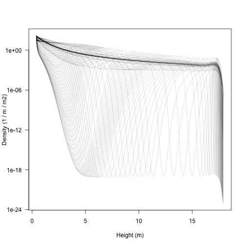
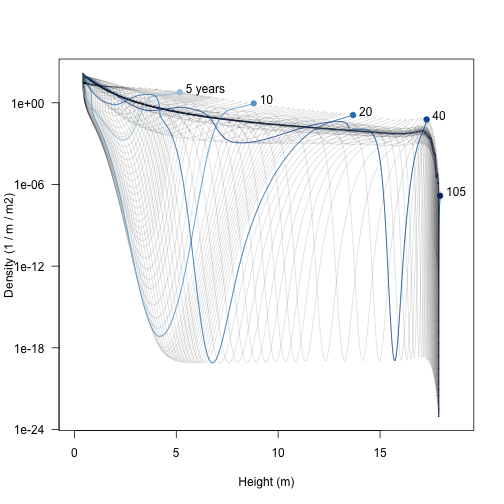
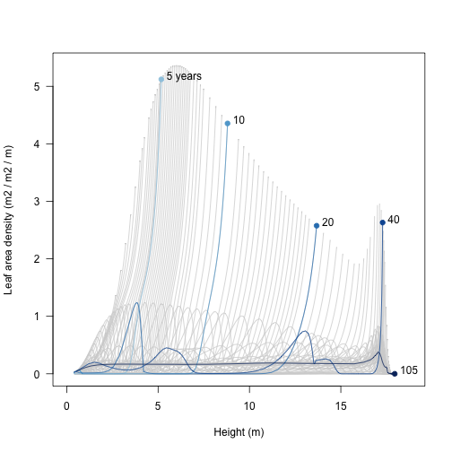
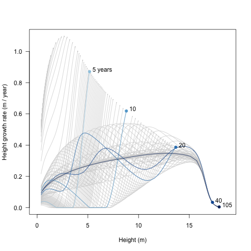
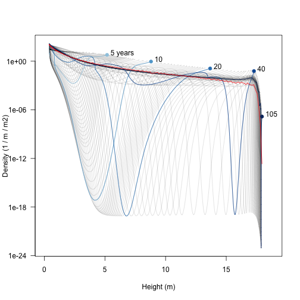

The aim here is to use the plant package to investigate dynamics within a patch of competing plants, focussing on emergent patch-level properties, rather than properties of plants within the patch.
library(plant)
p0 <- scm_base_parameters("FF16")
p0$control$equilibrium_nsteps <- 30
p0$control$equilibrium_solver_name <- "hybrid"
p0$disturbance_mean_interval <- 30.0We’ll work with a single species at equilibrium
p1 <- expand_parameters(trait_matrix(0.0825, "lma"), p0, FALSE)
p1_eq <- equilibrium_seed_rain(p1)
data1 <- run_scm_collect(p1_eq)There was a bit of hassle in vignette:patch in plotting all trajectories along with a couple of lines corresponding to focal years. We’re going to do the same thing here:
closest <- function(t, time) {
which.min(abs(time - t))
}
last <- function(x) {
x[[length(x)]]
}
times <- c(5, 10, 20, 40, last(data1$time))
i <- vapply(times, closest, integer(1), data1$time)
blues <- c("#DEEBF7", "#C6DBEF", "#9ECAE1", "#6BAED6",
"#4292C6", "#2171B5", "#08519C", "#08306B")
cols <- colorRampPalette(blues[-(1:2)])(length(i))
height <- t(data1$species[[1]]["height", , ])
log_density <- t(data1$species[[1]]["log_density", , ])As with height in vignette:patch, the density is a matrix of time and cohort identity. However, to show the profiles for a given time slice using matplot it is convenient to transpose this matrix (matplot works column-by-column so we want each column to to be the state of the system at a given time)
density <- exp(log_density)
matplot(height, density, type="l", lty=1,
col=make_transparent("black", 0.15),
xlab="Height (m)", ylab="Density (1 / m / m2)", las=1,
log="y")
Note that the densities here can be extremely low, and yet individuals within the cohorts continue to grow in size; this is the “atto-fox problem”, though here we drop down as low as 9 yocto plants / m / metre squared (a yocto-x being 1 millionth of an atto-x). Anyway….
The trajectories are easier to understand if a few are highlighted.
xlim <- c(0, max(height, na.rm=TRUE) * 1.05)
matplot(height, density, type="l", lty=1,
col=make_transparent("black", 0.15),
xlab="Height (m)", ylab="Density (1 / m / m2)", las=1,
log="y", xlim=xlim)
matlines(height[, i], density[, i], col=cols, lty=1, type="l")
points(height[1, i], density[1, i], pch=19, col=cols)
text(height[1, i] + strwidth("x"), density[1, i],
paste0(round(times), c(" years", rep("", length(times) - 1))),
adj=c(0, 0))
Early on there is a low density “dip” caused by self thinning (5 years). As the stand develops that dip broadens and deepens and moves forward in height (these very low density cohorts are still travelling the characteristic equations of the SCM). Later on (20 years) additional an second wave of recruitment gives a second pulse of high density (around 4 m tall), which can be seen travelling along in the 40 year profile to about 13 m. When the patch is very old the stand approaches a stable age distribution, though a very narrow window of “missing” heights exists just below the top of the canopy.
It’s also possible see where the leaf area in the patch is coming from; a profile of leaf area with respect to height. Again, this requires reconstructing the patches, and using an unexported function from plant to put this into a matrix:
patch <- lapply(seq_along(data1$time), scm_patch, data1)
leaf_area <- lapply(patch, function(x) x$species[[1]]$area_leafs)
leaf_area <- do.call("cbind", plant:::pad_matrix(leaf_area))
matplot(height, leaf_area, type="l", lty=1, col="lightgrey",
xlim=xlim, xlab="Height (m)",
ylab="Leaf area density (m2 / m2 / m)", las=1)
matlines(height[, i], leaf_area[, i], col=cols, lty=1, type="l")
points(height[1, i], leaf_area[1, i], pch=19, col=cols)
text(height[1, i] + strwidth("x"), leaf_area[1, i],
paste0(round(times), c(" years", rep("", length(times) - 1))),
adj=c(0, 0))
ode_size <- patch[[1]]$species[[1]]$seed$ode_size
growth_rate <- lapply(patch, function(x)
matrix(x$species[[1]]$ode_rates, ode_size)[1, ])
growth_rate <- do.call("cbind", plant:::pad_matrix(growth_rate))Finally, we can see where height growth rate is concentrated in the population. This differs from the profile in vignette:plant because it is reduced depending on the light environment, but that environment is the one constructed by the plant itself.
matplot(height, growth_rate, type="l", lty=1, col="lightgrey",
xlim=xlim, xlab="Height (m)",
ylab="Height growth rate (m / year)", las=1)
matlines(height[, i], growth_rate[, i], col=cols, lty=1, type="l")
points(height[1, i], growth_rate[1, i], pch=19, col=cols)
text(height[1, i] + strwidth("x"), growth_rate[1, i],
paste0(round(times), c(" years", rep("", length(times) - 1))),
adj=c(0, 0))
The above plots show relationships with patches of a given age What about the average relationship across the entire metapopulation? To get that, we average (integrate) over the distribution over patch (for formula see demography vignette). To achieve this we first need the patch-level relationships to a series of fixed heights
We’ll use a spline interpolation, on log-log-scaled data, clamped so that for x values outside the observed range are set to zero.
f <- function(height, density, hout) {
r <- range(height, na.rm=TRUE)
clamp_domain(splinefun_loglog(height, density), r, 0)(hout)
}Now interpolate the height-density relationship in each patch to the series of specified heights
xx <- lapply(seq_along(data1$time),
function(i) f(height[, i], density[, i], hh))
n_hh <- plant:::pad_list_to_array(xx)For each of these heights, we can now integrate across patches (i.e. across rows), weighting by patch abundance
trapezium <- plant:::trapezium
n_av <- apply(n_hh, 1,
function(x) trapezium(data1$time, x * data1$patch_density))Add this average to the plot (red line):
xlim <- c(0, max(height, na.rm=TRUE) * 1.05)
matplot(height, density, type="l", lty=1,
col=make_transparent("black", 0.15),
xlab="Height (m)", ylab="Density (1 / m / m2)", las=1,
log="y", xlim=xlim)
matlines(height[, i], density[, i], col=cols, lty=1, type="l")
points(height[1, i], density[1, i], pch=19, col=cols)
text(height[1, i] + strwidth("x"), density[1, i],
paste0(round(times), c(" years", rep("", length(times) - 1))),
adj=c(0, 0))
points(hh, n_av, col="red", type='l')